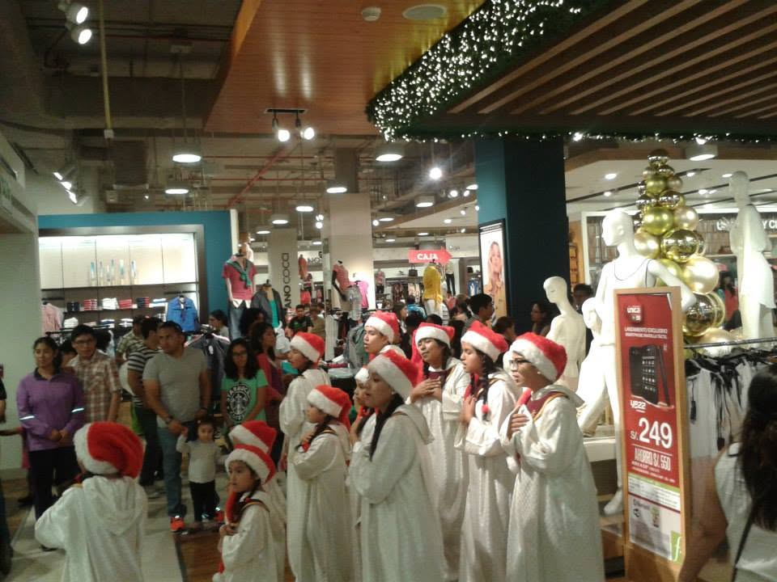
Navidad corporativa y centros comerciales
Villancicos en vivo, encendido de árbol con cuenta regresiva cantada y temporadas de diciembre.
Reservar fecha navideñaNavidad 2026 · Ya estamos separando fechas de diciembre
Coros de niños, jóvenes y adultos con violines, ensamble acústico y cajón peruano. Llevamos nuestro propio equipo de sonido y coordinamos directamente con su equipo de producción para que la presentación empiece a la hora y sin contratiempos.
Cotizar mi evento¿Prefiere hablar con nosotros? Escríbanos por WhatsApp y le respondemos el mismo día.
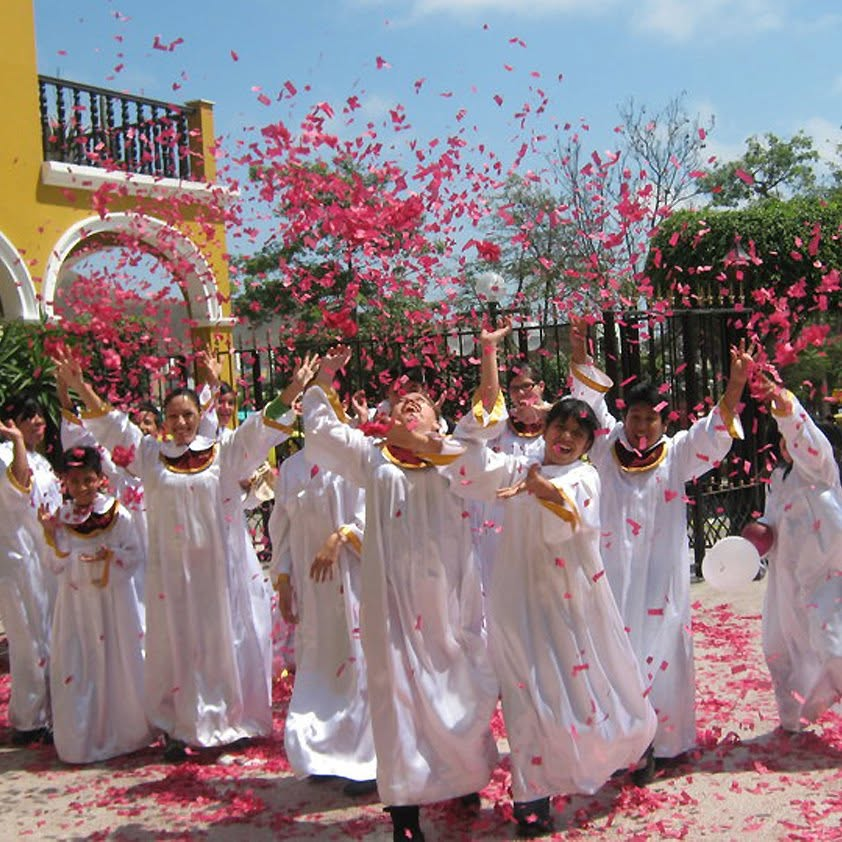
Coro, músicos y sonido con un solo proveedor y una sola persona de contacto.
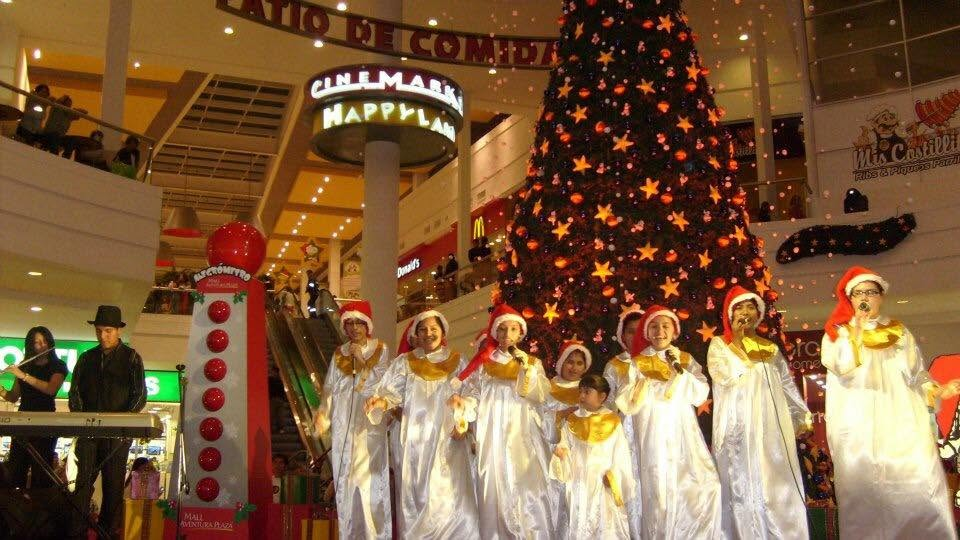
Llegamos con anticipación, instalamos y probamos el sonido, y armamos el repertorio según el evento, el local y el público.
Coro de niños, juvenil o de adultos. Le recomendamos el que mejor va con su evento.
Violines, instrumentos acústicos y cajón peruano para villancicos, música criolla, fusiones y clásicos.
Equipo de sonido, montaje y logística musical. Coordinamos horarios y pruebas directamente con su equipo de producción.
Del 15 al 24 de diciembre es la quincena más pedida del año.

Villancicos en vivo, encendido de árbol con cuenta regresiva cantada y temporadas de diciembre.
Reservar fecha navideña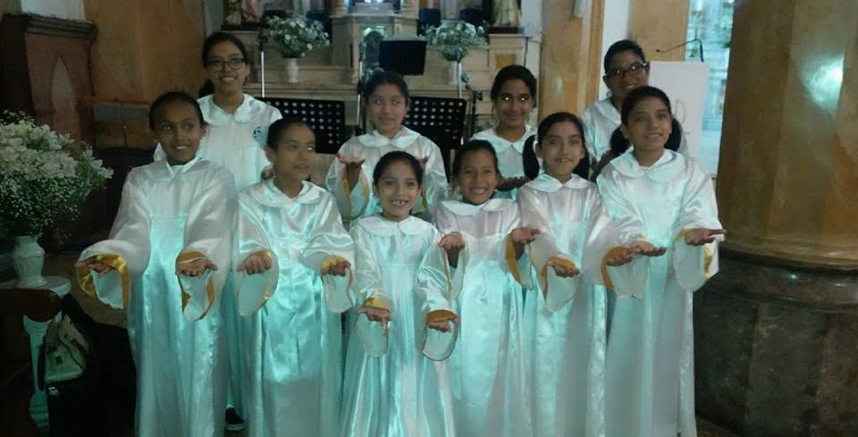
Coro con violines y órgano, o misa criolla con cajón peruano, para momentos solemnes.
Cotizar ceremonia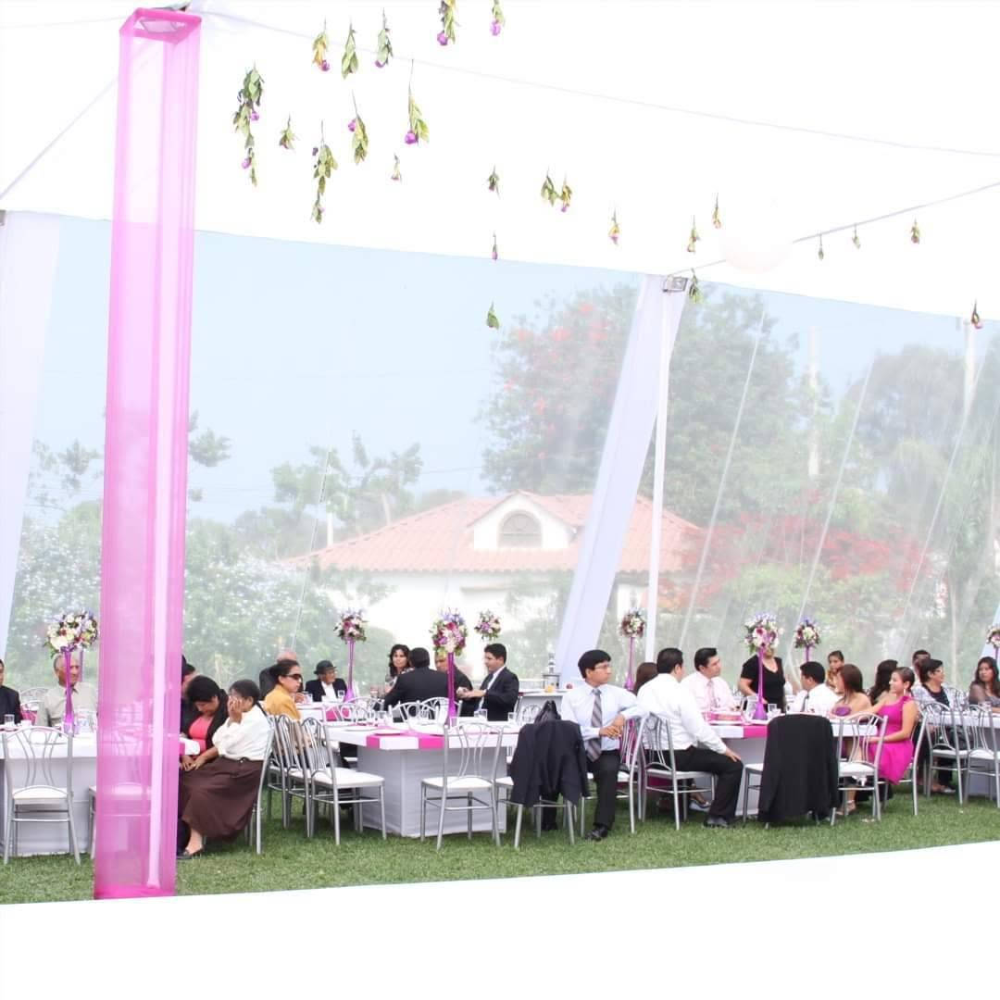
Música en vivo, sonido, mesas, mantelería y decoración en una sola propuesta.
Cotizar evento completoCada propuesta se arma según la fecha, el distrito, el número de invitados y la formación que elija.
Villancicos en vivo para la cena o el brindis de fin de año, con la opción de un villancico con el nombre de su empresa.
Noviembre y diciembreCuenta regresiva cantada y repertorio navideño para inaugurar la temporada en su centro comercial, sede o municipio.
Noviembre y diciembreVarias presentaciones en el mismo local durante diciembre, con tarifa preferencial por fecha.
DiciembreMúsica en vivo para recepciones, inauguraciones, premiaciones y cenas de gala.
Todo el añoMisa cantada con cajón peruano e instrumentos criollos, matrimonios, bautizos y aniversarios institucionales.
Todo el añoCoro, sonido, mesas, mantelería y decoración, coordinados por un solo equipo.
Todo el año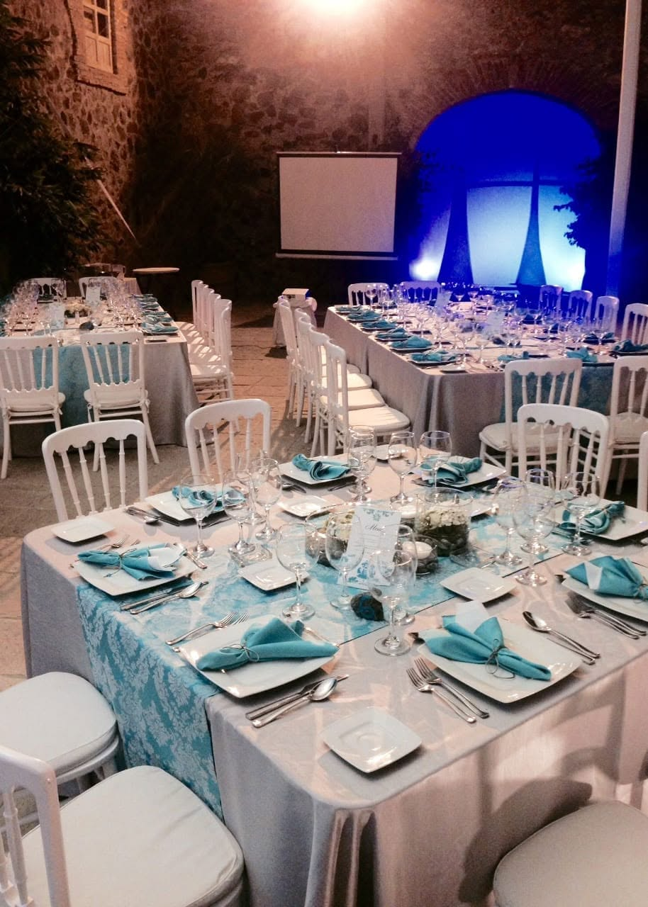
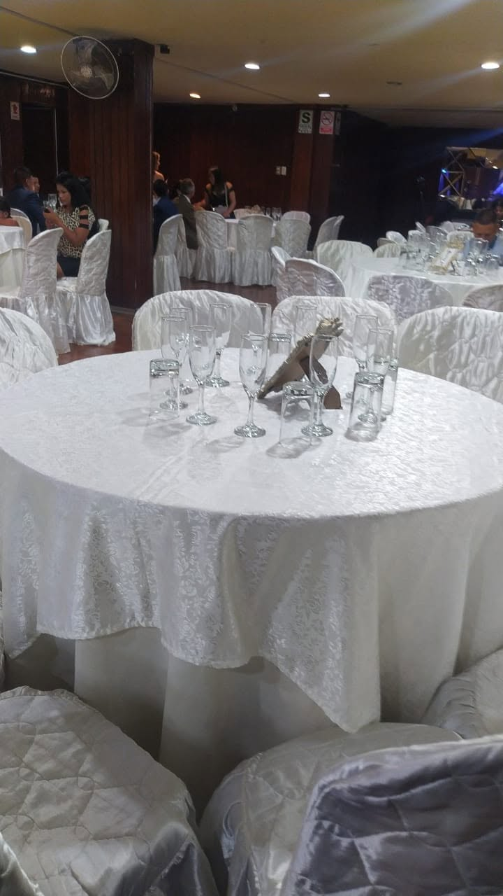
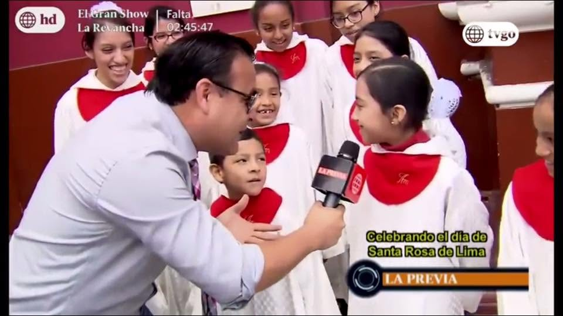
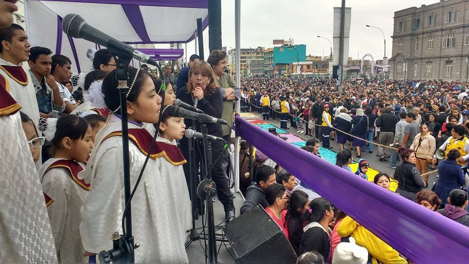
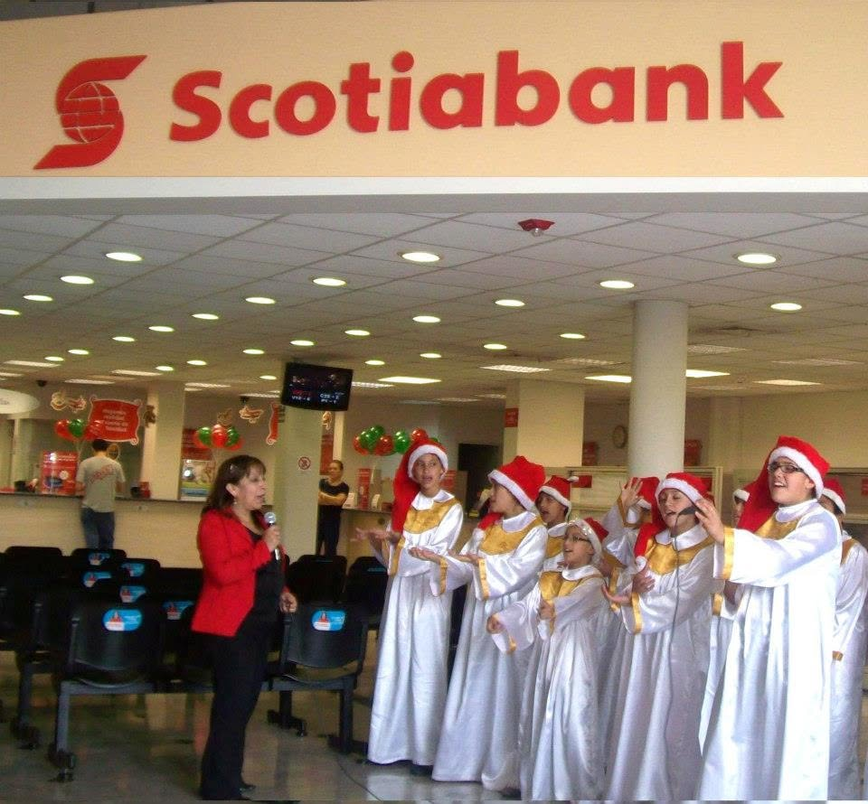
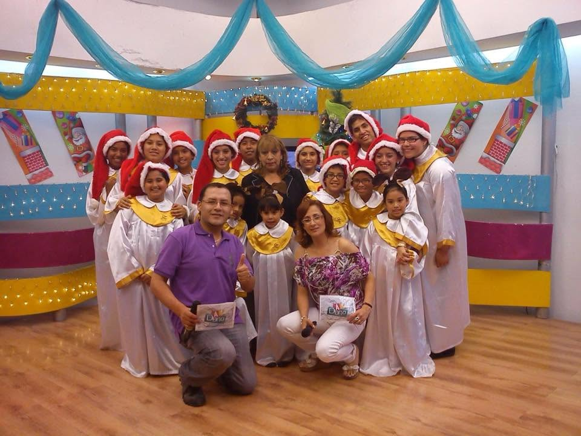
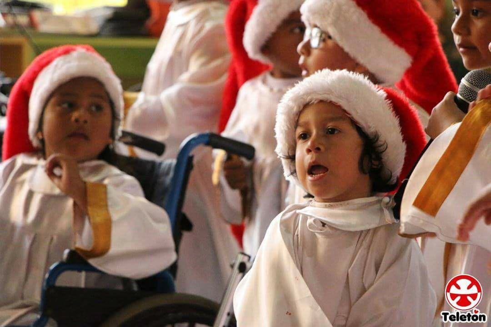
Nuestra trayectoria abarca presentaciones en televisión de señal abierta, ceremonias oficiales, encendidos de árbol en centros comerciales y galas empresariales. Hoy trabajamos con tres formaciones (niños, jóvenes y adultos) y un ensamble de violines, instrumentos acústicos y cajón peruano.
Fecha, distrito, tipo de evento y la formación que le interesa.
Por WhatsApp, para una respuesta rápida, o por correo, si su empresa necesita la propuesta por escrito.
El mismo día le enviamos la propuesta con el precio y los detalles para confirmar.
¿Tiene otra consulta? Escríbala en el formulario y se la respondemos con su cotización.
Depende de la formación, el espacio y el momento del evento. En la cotización le proponemos el tamaño ideal: desde un grupo reducido para un brindis hasta un coro completo con ensamble.
Sí, llevamos nuestro propio equipo y lo dejamos probado antes de que lleguen sus invitados. Los detalles (potencia, micrófonos y montaje) los definimos con usted según el local y el número de invitados.
Sí. La movilidad y los viáticos se incluyen en la propuesta para que vea el costo total desde el inicio.
Sí, en eventos de Navidad corporativa. Nos envía el nombre de su empresa y lo integramos a la letra.
Del 15 al 24 de diciembre es la quincena más pedida del año: le recomendamos separar su fecha cuanto antes. Para el resto del año, escríbanos apenas tenga la fecha.